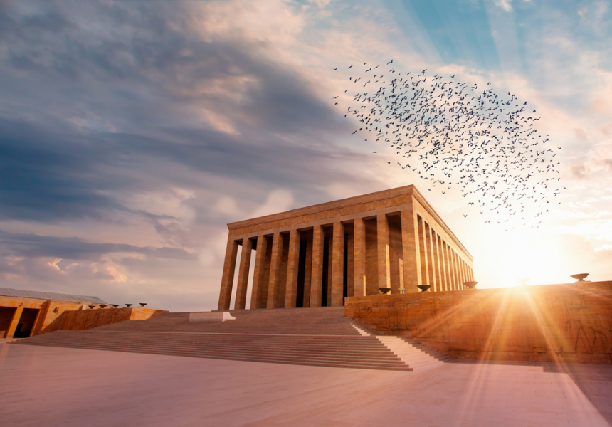
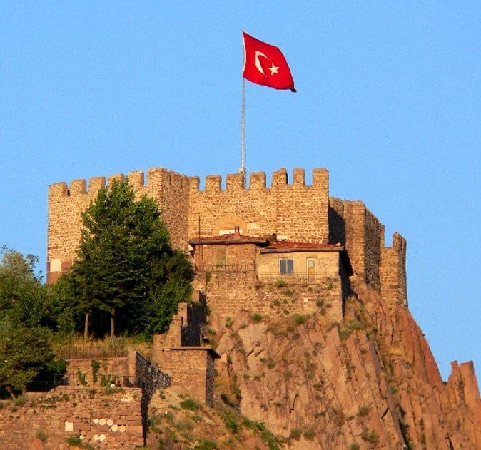
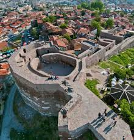
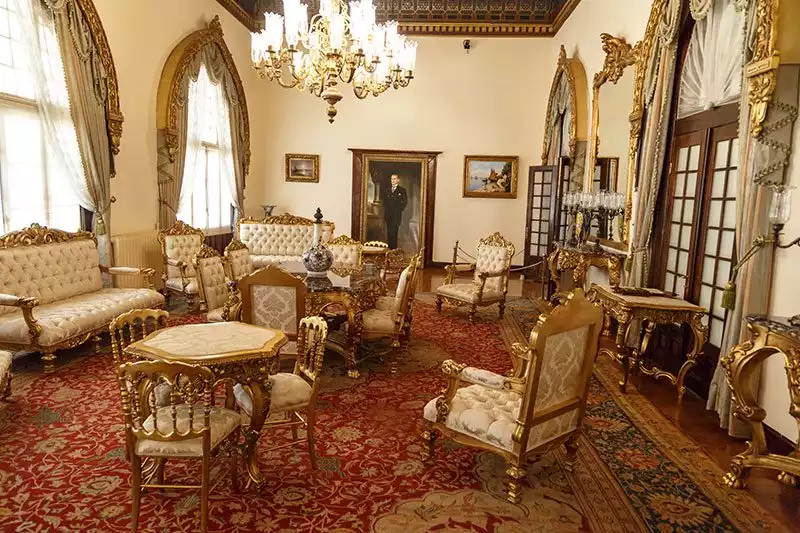
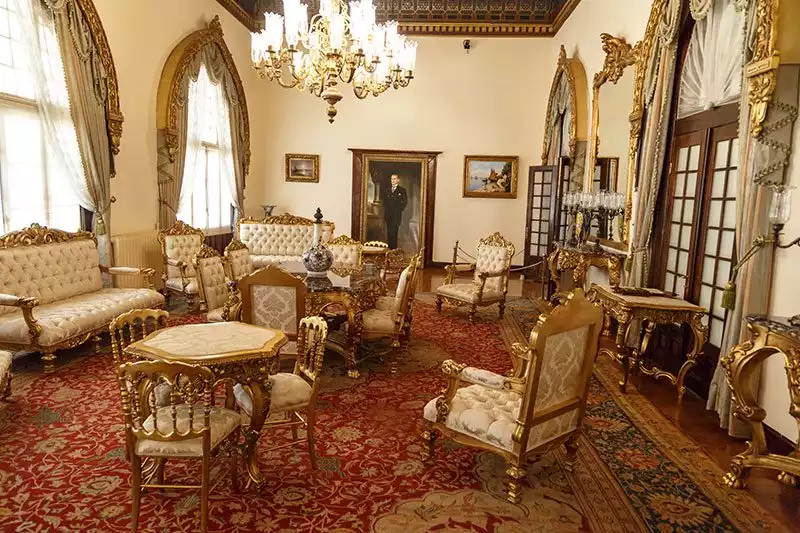

Anıtkabir


Türkiye Cumhuriyeti'nin kurucusu Mustafa Kemal Atatürk'ün anısını yaşatan, tarihî ve kültürel değeri yüksek bir anıt mezardır.
Ankara Kalesi


Şehrin en eski yapılarından biri olup, Ankara'nın tarihini ve muhteşem manzaralarını sunan, surları ve dar sokaklarıyla ünlü bir kaledir.
 
